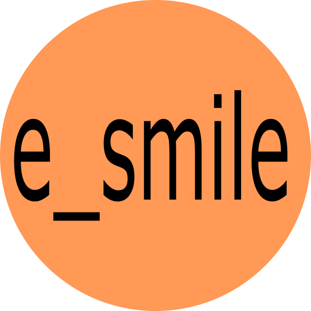

小さいから大きくなれるんだ！
株式会社ホットソウルでは、
新サービスや製品の開発に共に取り組む、
ITエンジニアの正社員を募集しています。
次のSTEPを目指し共に成長しよう
株式会社ホットソウルはWeb系のソフトウェア開発に強みを持つ会社です。
事業基盤強化のため自社製品・サービスを開発を準備中です。
柔軟な発想を持つフレッシュなITエンジニアを中途採用します。
求める人物像
成長したい方。
年齢
20代・30代
経験（応相談）
ICT業界での勤務経験が2年以上
勤務地
神奈川・東京
業務内容
Webシステムを中心とする受託開発、自社製品・サービスの研究開発
コンサルティング業務の補助（希望者のみ）
採用人数
今期3名
成長を支えるサポート体制
一人一人と向き合い、自ら成長する力を支援します。
ITエンジニアとして成長する
本人が目指すエンジニア像と望まれる人財像を常日頃のコミュニケーションを通じてすり合わせ、ITエンジニアとしての成長を戦略的に支援する仕組みがあります。
最新技術や資格取得の為の勉強会、自社企画のソフトウェア開発作業などを通じて、キャリアプラン実現に必要なスキルを育てる機会を提供します。
プロジェクト参画後も一人で問題を抱え込むことの無いように、複数名での受託体制に取り組むと共に、守秘義務に違反しない範囲で情報を共有し、全社一丸で業務遂行に取り組む体制をつくります。
ビジネスパーソンとして成長する
小さな会社ならではのメリットは、経営との距離が近いこと。
常日頃から経営に関する情報を共有し、ときに重要な経営判断について助言を求めることもあるでしょう。経営者の目を養い、ITエンジニアとしての仕事もビジネスの視点から俯瞰する能力を鍛えます。
また、中小企業診断士、税理士、弁護士など各種士業の方をはじめ、外部の専門家や経営者とのネットワークを活用し、研修やプロジェクト参画等を通じて、ビジネスパーソンとしてもスキルアップする機会を提供します。
安心して働ける就業環境
社会保険完備・就業規則明文化・労働条件通知書提示
給与・賞与
35歳既婚・子1人という場合に、年収470万〜630万程度となるよう給与制度を設計しています。賞与は冬・夏年2回支給予定、ただし一部会社業績に応じます。
労働時間・休日・休暇
1日8時間、週40時間労働、週休2日制です。
勤続期間に応じて年次有給休暇を付与します。（10日〜20日）
他に年末年始休暇（12/29〜1/3）、夏季休暇（4日）、慶弔休暇あり。
その他相談応じます。
人事制度について
期待される役割・必要とされる知識技能に応じて、ⅠからⅤの区分を設けたステージ制度です。ステージが給与計算の起点となります。
年1回10月に前年実績を対象として人事評価を行い、昇給やステージ格付けに反映します。人事評価は、各ステージに求められる役割・必要な知識技能に対して、ステージごとの重みを考慮した100点満点での採点により行います。
中途採用者のステージ格付けは、業務経歴などを勘案して仮格付けを行い、正式採用となる3か月後に行います。
当社について
何の会社ですか？
よく聞かれる質問です。
現在の事業内容を日本標準産業分類に照らし合わせると、情報通信業>情報サービス業>ソフトウェア業>受託開発ソフトウェア業、が主たる事業となります。
日本標準産業分類 - 受託開発ソフトウェア業
“顧客の委託により，電子計算機のプログラムの作成及びその作成に関して，調査，分析，助言など並びにこれらを一括して行う事業所をいう。”
2011年10月、茅ヶ崎の海にほど近い小さなアパートで創業。
事業について漠然とした想いはあったものの、具体的にどんな行動を起こせば良いのかわからないまま「法人の看板がきっと何とかしてくれる。」そんな淡い期待を持って、フリーランスのITエンジニアから株式会社へと形を変えたのでした。
経営者としての目覚め。
それから3年ほど過ぎても企業らしい活動は出来ないまま、フリーランスの延長の日々が続きました。その頃から、会社が成長するためにはまず経営者が成長しなければならない、という当たり前の事実をようやく強く意識できるようになりました。
そこから、自社のコンサルタントとなるべく中小企業診断士の資格に挑戦し、2年半かけて2016年に合格。企業としての成長戦略、従業員の採用・育成戦略が明確になりました。
ワクワクする未来の実現へ。
大手企業ですら人材不足が深刻化しており、当社のような小さな会社にとっては逆風しかないような世情ではありますが、小さな会社にしかできないコトを武器に、企業として成長するべく劇的に生まれ変わろうとしています。
具体的な目標として、2022年にIT事業・コンサルティング事業・農食関連事業の3事業体制を確立することを目指し、事業基盤の開発と整備に取り組んでいます。
そして今回が初めての従業員募集。お店に例えるならば新装開店のオープニングスタッフです。
超零細企業への応募は不安だらけでしょう。けれども、それを上回る面白さがきっとあります。なぜなら、あなたのワクワクする心こそが当社の新事業を創る唯一無二の原動力からです。 だから、あなたが安心して冒険できるように、ホットソウルは全力でバックアップ致します。
まだ見たことのない世界へ、株式会社ホットソウルと冒険に出かけませんか？
2018年吉日
代表取締役 若杉廣
ご質問、ご相談、とりあえずちょっと話してみたい、etc... お気軽に メールまたはTwitter - ダイレクトメッセージ にどうぞ！
@HotsoulDotJp
さらに、その先へ。道は続く
副業OKです。
公序良俗に反せず、当社業務に悪影響が無ければ、副業OK。
独立・創業を支援します
当社理念と合致する事業内容であれば、資本出資、業務提携等により、独立・創業についても積極的に支援。
歩き始めて見つかる道もある
2000年に大学を卒業し、中堅の受託開発を中心とするソフトウェア会社に就職、以来ずっとITエンジニアでいます。とは言え、最初からこの仕事が向いていると思っていた訳ではありません。
当時は、何度目かの就職氷河期と言われていました。
そんな中、ITエンジニアの求人は比較的多く、また理系出身だったこともあり、最初に面談まで進んだ会社で内定まで頂くことができました。その後はろくに就職活動もせずフラフラしており、そのまま内定した会社に就職したのでした。
その頃の私は、特段コンピューターが好きだった訳でもなく、大学の授業であったプログラミング実習で触れるくらいでした。就職後も2年ほどは、インターネットはおろかテレビもない部屋に住み、仕事以外ではパソコンに触れることも無い生活をしていました。初めて自分でパソコンを購入したのは就職後3年以上経ってから、MacのiBookG4でした。
そんな風に、お世辞にも熱心とは言えないエンジニア見習いではありましたが、周囲の人や環境に恵まれたおかげで、ソフトウェア開発の仕事は嫌いにならずに続けてこれました。
C,C++でのOJTに始まり、配属後はWebの世界へ。当時はまだCGIが主流で、HTML,JavaScriptと共にPerlを学びました。やがて、世の中の流行を少しだけ先取りするタイミングで、Javaの世界へと進みました。OSやミドルウェアについても、Unix,Linux,Oracle,PostgreSQL,Apache,Tomcatなど一通りの経験をさせて頂き、職場の皆様のサポートを受けて基本情報技術者、ソフトウェア開発技術者の資格も取得、エンジニアとしての土台を築くことが出来ました。
会社に対して人並みの不満などは持ちつつも、順調だったサラリーマン生活に転機が訪れたのは、就職して5年目の頃でした。これまでのような開発中心のプロジェクトではなく、独特な企業文化を持ったユーザ企業のシステム部で働くことになったのです。
文化の違いや人間関係になかなか慣れる事が出来ず、30歳という節目を迎える時期でもあり、このままこの仕事を続けていけるのか、また自分にとってもこのまま続けて良いものか、大いに悩んだ3年間でした。悩んだ末に、一つの決断をします。
「じっと悩んでいても解決はしない。だったら試してやろう！」
これまでとは全く別の生き方も視野に入れつつ、期限を決めて独立エンジニアとして挑戦してみることにしました。それでダメなら多分本当に向いていないのだろうと。
そして、2008年に8年間勤めた会社を退職し、個人事業主の独立エンジニアとして開業しました。
その決断は、株式会社ホットソウルへと繋がっています。
採用について

利益と貢献
株式会社は、株主や従業員をはじめとする関係者の“貢献”を動力源として営利活動を行い、その結果得た“利益”を還元するエンジンに例えられます。
あなたにとって当社から得たいと思う利益は何でしょう？
また当社に対してできる貢献とは何でしょう？
株式会社ホットソウルのどこに興味をお持ちですか？
採用の流れ
まずは直接会ってお話ししましょう。履歴書などの準備も不要です！
当社が求める人物像や就業環境、当社の概要についてご確認頂き、お互いの希望条件に合致するとお考えの方はメールまたはダイレクトメッセージでご連絡ください。
面接という堅苦しい形ではなく、まずはざっくばらんに意見交換しましょう。
その後実際に応募頂ける場合は、日程を調整の上、詳細な労働条件等の会社説明会兼採用審査を行います。その結果双方合意となれば、仮採用となります。仮採用後３か月で本採用となります。